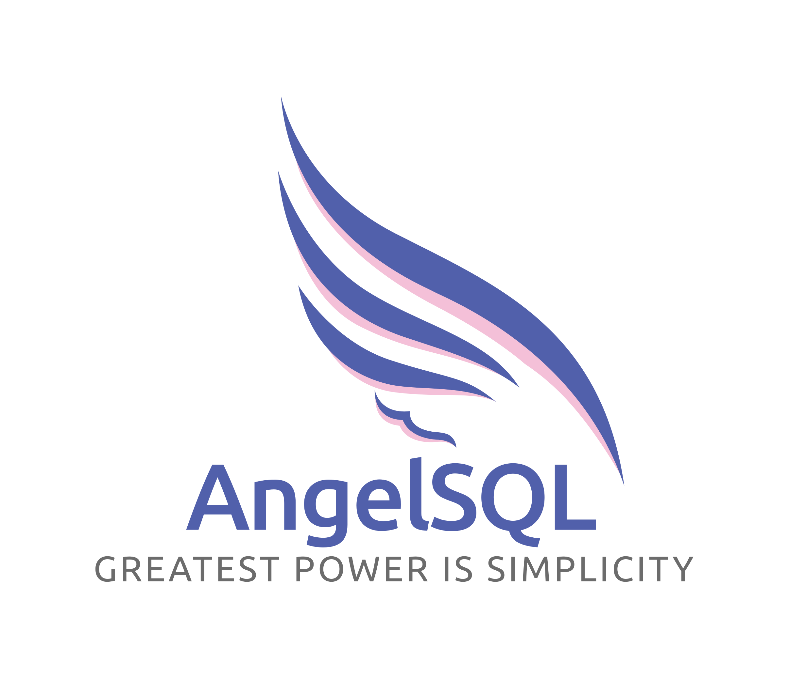

AngelSQL is a database server, web server, and development environment all in one so you only need to install it to start developing applications, its main purpose is to be simple.
A small tool to manage large volumes of data.
Usuario
Password
Start Session
Alert
Accept